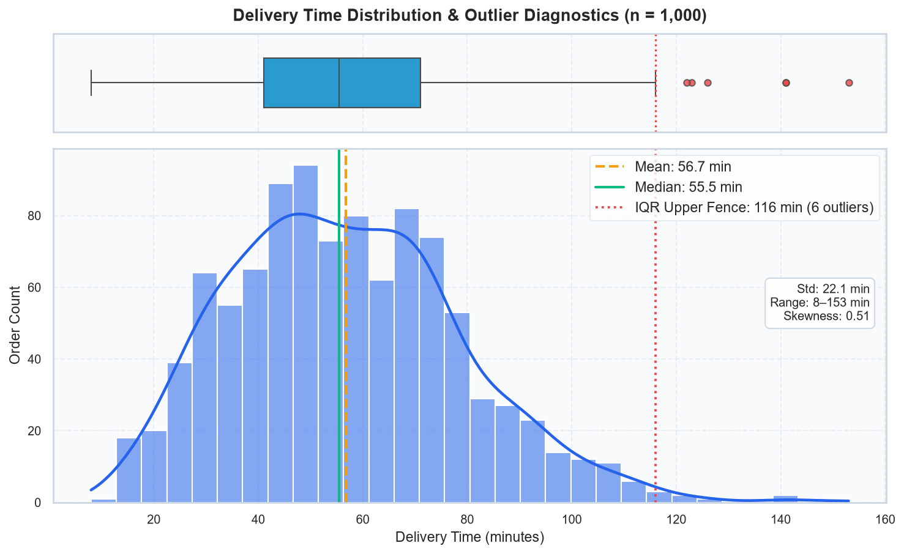
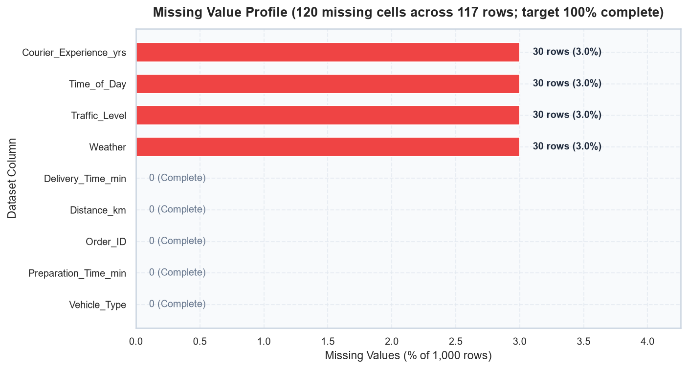
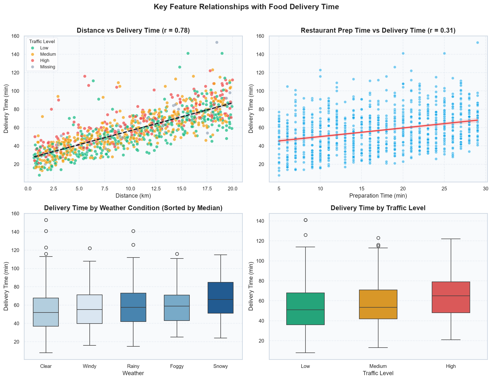
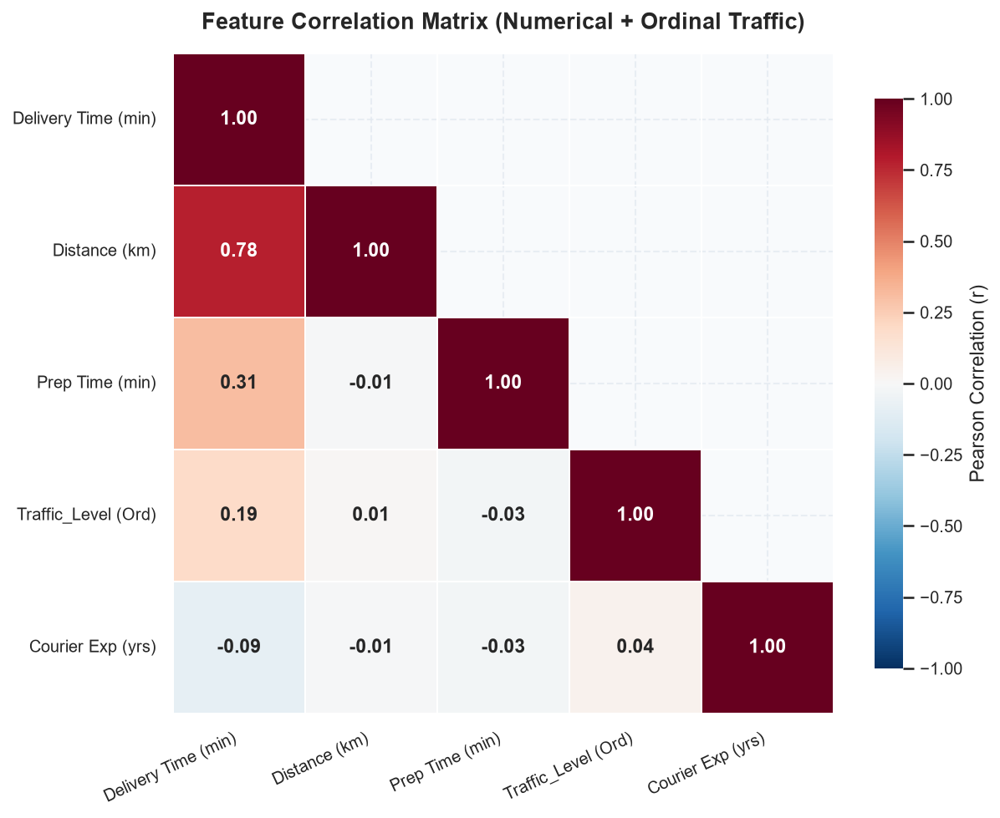
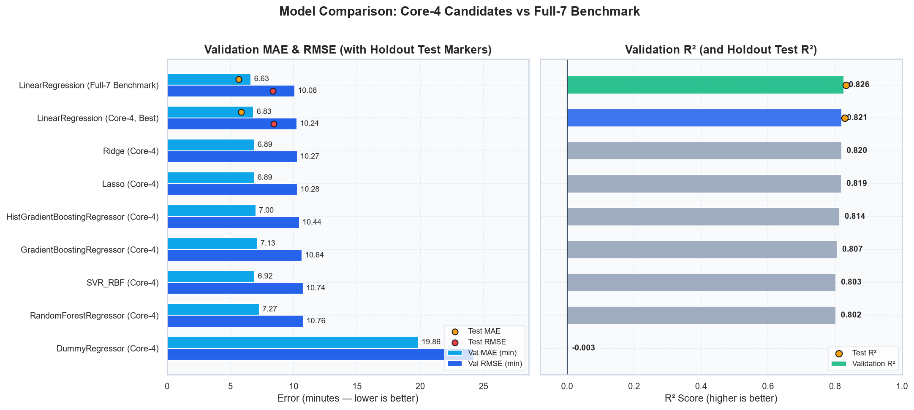
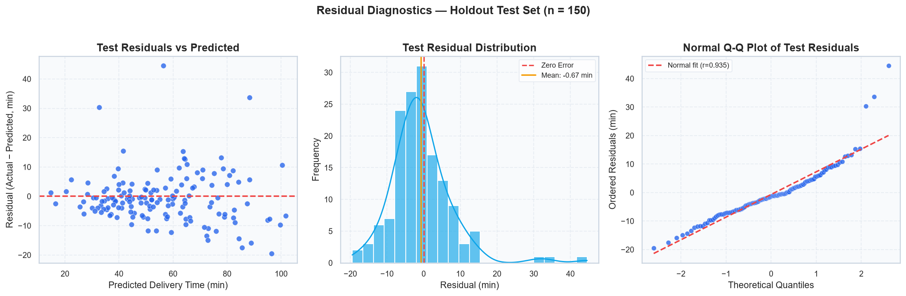
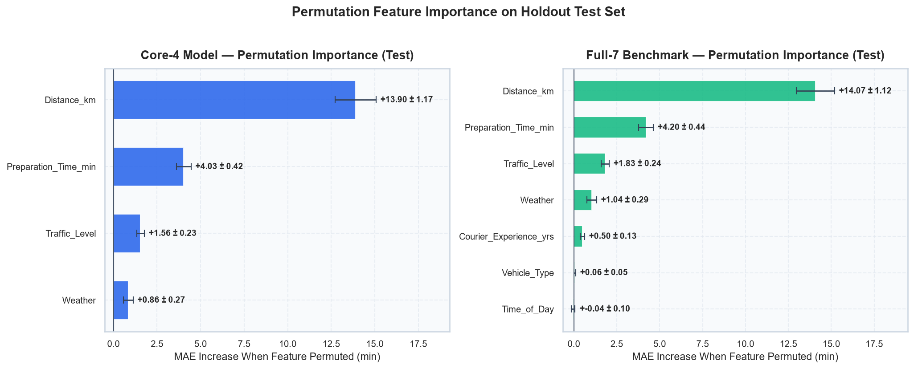

Predict exact delivery time (in minutes) from distance, traffic level, weather, and restaurant preparation time — powered by leak-free scikit-learn regression pipelines with 90% empirical prediction intervals.
Upload a CSV with columns Distance_km, Traffic_Level, Weather, Preparation_Time_min (and optional Full-7 columns) to generate instant batch predictions.






Distance_km has a strong linear correlation with delivery duration (r = 0.78) and is by far the most influential predictor.Preparation_Time_min adds directly to total fulfillment time (r = 0.31). Reducing kitchen bottlenecks is the clearest operational lever.Time_of_Day, Vehicle_Type, and Courier_Experience_yrs improves holdout test MAE by only 0.19 min (5.85 → 5.66 min). Linear regression outperforms tree ensembles and SVR because the underlying delivery time process is predominantly additive.